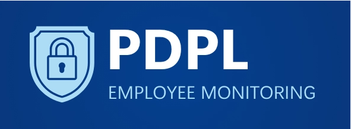
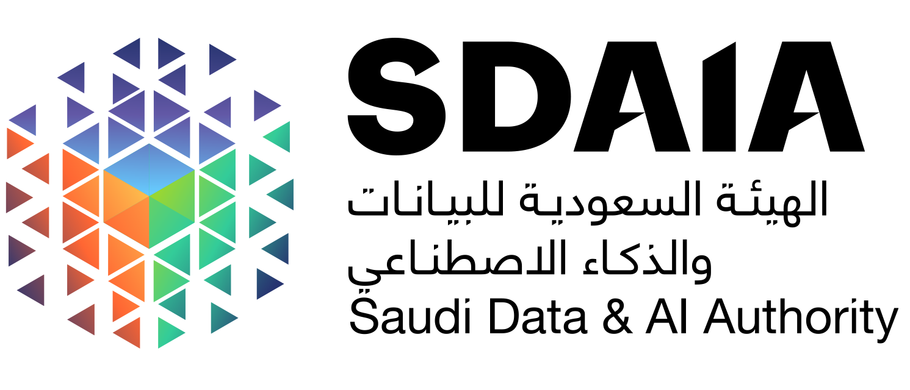
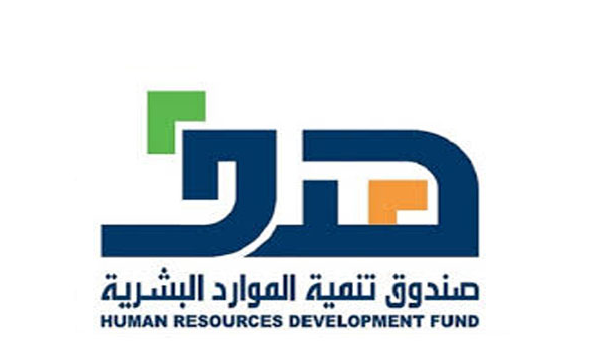
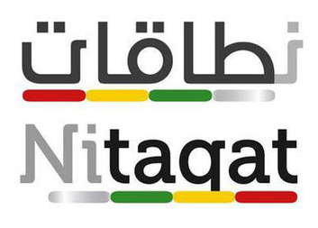

Governance Framework Design
Board-level governance structures aligned to UAE Companies Law and KSA Companies Act.
- Board charter & committee ToR
- Delegation of authority matrix
- Corporate governance code
GRC Services | UAE & KSA
Enterprise-grade governance, risk and compliance built for UAE and KSA businesses. One integrated programme, one point of accountability.
Service Portfolio
Board-level governance structures aligned to UAE Companies Law and KSA Companies Act.
Risk identification, assessment and monitoring. COSO and ISO 31000-aligned.
Full obligation mapping across MoHRE, CBUAE, UAE PDPL, NCA, SAMA, NESA.
Co-sourced or outsourced internal audit function. Independent, objective assurance.
End-to-end AML programme. FATF, CBUAE and SAMA-aligned.
Emiratisation and Saudisation managed by GCC specialists who know your workforce.
Structured readiness against operational disruption, crises and reputational events.
Digital GRC platforms configured for your organisation, automating compliance monitoring.
How It Works
Regulatory Context
Ministry of Human Resources and EmiratisationLabour law, Emiratisation (NAFIS), WPS and employment contracts
Central Bank of the UAE (CBUAE)AML/CFT framework, licensing, consumer protection and financial crime
National Cybersecurity Authority (NCA)UAE Cybersecurity Framework, cloud policy and critical sectors

UAE Personal Data Protection Law (PDPL)Data governance, DPO obligations, consent and retention
Economic Substance Regulations (ESR)CbCR reporting, substance tests and MoF compliance
UAE Federal Companies LawBoard duties, shareholder rights and corporate governance
Saudi Central Bank (SAMA)Cybersecurity framework, AML/CFT, licensing and risk controls
National Cybersecurity Authority (KSA)Essential Cybersecurity Controls (ECC), mandatory for all sectors

SDAIA, Saudi Data and AI AuthorityKSA PDPL, consent, data processing and cross-border transfers

Human Resources Development Fund (HRD)Nitaqat Saudisation quotas, labour law and workforce compliance

Zakat, Tax and Customs Authority (ZATCA)VAT, transfer pricing, e-invoicing and tax compliance
KSA Companies LawJSC/LLC governance, statutory audit and board obligations
Why TASC
Deep institutional knowledge of UAE and KSA regulatory culture, built over two decades.
Teams on the ground in both markets. Local regulatory nuance, not just reading frameworks.
One relationship. One point of accountability. We own the whole GRC programme for you.
Enterprise-grade GRC delivered at SME-appropriate scope and price. Right-sized, not diluted.
Complimentary | No Obligation
Our team will respond within one business day.
Your information is confidential.